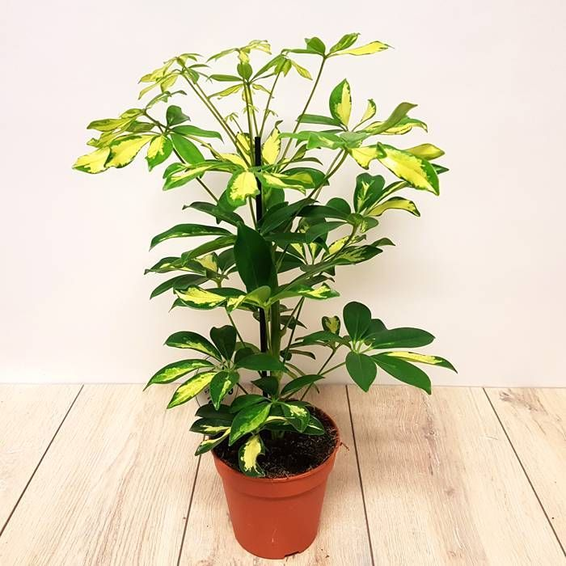

Heptapleurum arboricola

Description
Heptapleurum arboricola (syn. Schefflera arboricola, Chinese: 鹅掌藤;
pinyin: ézhǎng téng; lit. 'goose-sole vine') is a flowering plant in the
family Araliaceae, native to Hainan Province, China and Taiwan.
Its common name is dwarf umbrella tree, as it resembles a smaller version
of the umbrella tree, Heptapleurum actinophyllum.
Cultivation
Care
-
The plant prefers bright indirect light, but can adapt to a wide variety
of light levels. As a tropical plant, it prefers moisture and humidity,
but soil should be well-drained and allowed to dry out between
waterings. Allowing the plant to sit in water can cause root rot.
Aerial roots
-
Under the right conditions, this plant will produce aerial roots that,
when they reach the ground, will convert to fully functional roots. They
give the plant an unusual and interesting appearance. Three conditions
must be maintained for the plant to produce them: a high growth rate,
insufficient trunk roots (the plant is root bound or these roots are
pruned) and constant, very high humidity
Toxicity
-
All parts of the plant contain calcium oxalate crystals, saponins and
terpenoids, toxic compounds which are irritants for cats and dogs. They
can cause swelling (in some cases leading to breathing difficulties),
burning of the mouth, difficulty swallowing, vomiting, diarrhoea, and
itching.[10][11] For humans, the plant is low-severity poison and a skin
irritant which can cause contact dermatitits.
Description
Flowers
-
Appearing from midsummer to early autumn, the flowers are produced in a
20 cm panicle of small umbels, each umbel 7–10 mm in diameter with 5–10
flowers.[2] The flowers are hermaphroditic, having a colour ranging from
yellow to green and a double perianth radial symmetry. They are composed
of an entire annular calyx, five almost fully developed sepals, a
corolla with five petals 2.5 mm long, with five stamens and five or six
carpels that enclose the ovary. The style is not recognizable and the
stigma is established.
Fruits
-
The fruits have an almost spherical oval drupe, with a diameter of about
5 mm. The endocarp contains five seeds. The fruits ripen from late
summer to early winter. They begin as orange glandular points. At
maturity, they become red-violet. The fruits are inedible to humans, but
may be consumed (and spread elsewhere) by various birds, parrots or
other animals.